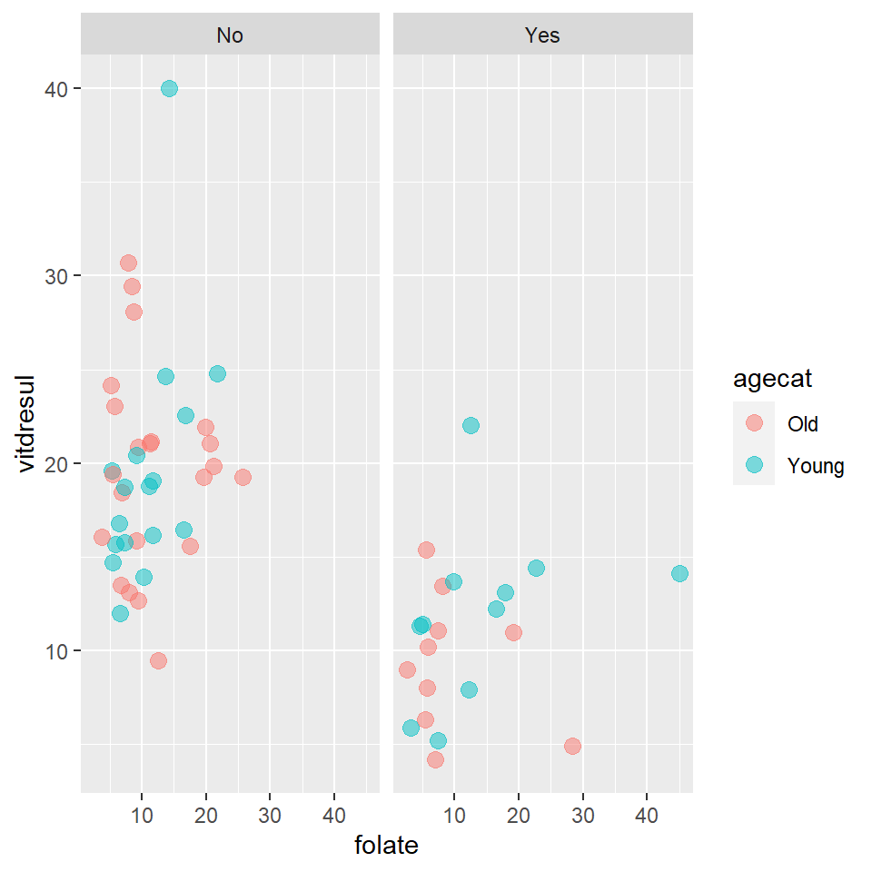

Chapter 14 Introduction to the linear model
14.1 Introduction
The linear model is a generalisation of various tests and modelling techniques we have already encountered in this module. Essentially the \(t\) test, one-way analysis of variance and regression can all be integrated into a single modelling framework. The linear model really developed from a method called ANCOVA (analysis of covariance) developed by the famous geneticist/statistician Ronald Fisher and his co-workers (1927) which allowed analysis of variance (using categorical variables) and regression to be combined into one analysis. Here we show how the linear model can be used to perform some of the tests from earlier in the module.
14.2 The linear model as a \(t\) test
The linear model can be used to undertake \(t\) tests but the data has to be thought of in a slightly different manner.
Example Consider the TEON medical dataset; it was data collected to investigate causes of Tanzanian Endemic Optic Neuropathy (TEON) a degenerative disease of the eyes. There is a hypothesis that TEON may be due to vitamin deficiencies.
As a reminder of the data, the first six records of the data are shown below:
head(meddata) gend age vitdresul vitdc vit.12 vitbc folate TEON teonpres
1 female 50 10.98 insufficiency 310.0 normal 19.17 Yes 1
2 female 39 13.46 insufficiency 238.0 normal 8.16 Yes 1
3 female 39 15.36 insufficiency 361.0 normal 5.55 Yes 1
4 male 28 11.32 low 113.4 low 4.58 Yes 1
5 male 17 5.88 defficiency 313.0 normal 3.18 Yes 1
7 male 26 12.21 insufficiency 986.0 high 16.41 Yes 1Consider a \(t\) test; we want to explore the difference between vitamin D levels in the two TEON groups (presence or absence of TEON). In the commands below, two new objects are created for coding convenience: vitamin D levels where TEON is present (yesteonvitD) and vitamin D where TEON is absent (noteonvitD).
require(tidyverse)
yesteonvitD<- dplyr::filter(meddata, TEON=='Yes') %>%
dplyr::select(vitdresul)
noteonvitD<- dplyr::filter(meddata, TEON=='No') %>%
dplyr::select(vitdresul)
# Equivalent to:
# noteonvitD<- meddata$vitdresul[meddata$TEON=='No']Note here we’re using pipes from tidyr using the tidyverse package (Wickham 2021) and tools from the dplyr libraries using the tidyverse package (Wickham et al. 2021) (both loaded using the tidyverse package) to create the two new objects. They’re very good for data wrangling.
Having the data in the required form, we perform a two sample (two-tailed) \(t\) test (assuming equal variances):
t.test(x = yesteonvitD, y = noteonvitD, var.equal=TRUE)
Two Sample t-test
data: yesteonvitD and noteonvitD
t = -6.1878, df = 58, p-value = 6.666e-08
alternative hypothesis: true difference in means is not equal to 0
95 percent confidence interval:
-11.764534 -6.013488
sample estimates:
mean of x mean of y
10.69714 19.58615 The results indicate:
- We have a significant difference ( p-value = \(6.6e^{-10}\))
- Group
yesis \(19.58-10.697=8.883\) units lower than groupnoon average - The 95% CI for this is about -11.76 to -6.01.
We can write the same a little differently to emphasize the similarity of a two sample \(t\) test with linear models - we can think of this as a very general statement of the form:
\[y=f(x)\]
This is interpreted as \(y\) is a function of \(x\). In our example, \(y\) is the vitamin D level and this can be written as a function of the TEON group. The alternative syntax used below highlights this interpretation:
# Order TEON levels for comparability
meddata$TEON <- relevel(as.factor(meddata$TEON), ref="Yes")
# Two sample t test as a model
t.test(vitdresul ~ TEON, data=meddata, var.equal=TRUE)
Two Sample t-test
data: vitdresul by TEON
t = -6.1878, df = 58, p-value = 6.666e-08
alternative hypothesis: true difference in means is not equal to 0
95 percent confidence interval:
-11.764534 -6.013488
sample estimates:
mean in group Yes mean in group No
10.69714 19.58615 Instead of treating the data as two distinct data sets, we have instead used meddata with vitdresul in one column and the group TEON in another column.
We get the same results, but were more explicit by stating \(y = f(x)\).
Note:
- We are making sure the groups are ordered to produce the same sign estimates (not very important)
- We are also not using the Welch-Satterthwaite variant (of the two sample \(t\) test), so we can compare to the next model.
14.2.0.1 Using a linear model
The same model can be fitted as a simple linear regression model and now we try the same analysis using the lm function.
meddata$TEON <- relevel(meddata$TEON, ref='No')
TEON_lm <- lm(vitdresul ~ TEON, data=meddata)
summary(TEON_lm)- I have set the baseline level to be the
nogroup, for comparability with previous analysis (i.e. the intercept) - The
yesgroup is then estimated relative to the baseline i.e. the mean value foryesis the baseline plus thecoefficientgiven foryes(19.5862 + -8.8890) - The model structure is like before \(y=f(x)\) (or
y ~ xin R code). - The signal (\(f\)) in this example is very simple - just means based on group membership.
Call:
lm(formula = vitdresul ~ TEON, data = meddata)
Residuals:
Min 1Q Median 3Q Max
-10.1262 -3.7462 -0.2462 2.4929 20.3938
Coefficients:
Estimate Std. Error t value Pr(>|t|)
(Intercept) 19.5862 0.8499 23.046 < 2e-16 ***
TEONYes -8.8890 1.4365 -6.188 6.67e-08 ***
---
Signif. codes: 0 '***' 0.001 '**' 0.01 '*' 0.05 '.' 0.1 ' ' 1
Residual standard error: 5.307 on 58 degrees of freedom
Multiple R-squared: 0.3976, Adjusted R-squared: 0.3873
F-statistic: 38.29 on 1 and 58 DF, p-value: 6.666e-08The 95% confidence intervals for the estimated regression coefficients are given by:
confint(TEON_lm) 2.5 % 97.5 %
(Intercept) 17.88497 21.287336
TEONYes -11.76453 -6.013488Scanning through all the results, notice that some values are common:
- t test statistic and the regression coefficient for ’TEONYes` are the same (-6.1878)
- the same p-value (\(6.67e^{-08}\)) for each statistic
- the same estimates (19.586) and confidence intervals (-11.76, -6.01).
Note that the \(t\) test can do one thing the linear model cannot. One assumption of the linear model (which we will discuss in detail later) is that the variance of the two groups (in the case of the \(t\) test analogue) are the same. The linear model can only undertake the equivalent of the pooled \(t\) test (i.e. standard deviations of the two groups are assumed equal) not the unpooled \(t\) test (i.e. standard deviations are not equal).
Q14.1 Considering the model that has just been fitted, what is the dependent, or response, variable in the model?
Q14.2 What is the predictor, or explanatory, variable in the model?
Q14.3 Comment on the direction of causality implied in these models. Is the latter analysis necessarily appropriate?
Q14.4 For the \(t\) tests, the argument var.equal=TRUE is specified. The same argument is not required to be specified for a linear model. What do you think this might imply about the underlying assumptions of the linear model?
Q14.5 Write down the equation of the linear model being fitted and explain each of the terms in the model.
Q14.6 Explain the columns Estimate, Std. Error, t value and Pr(>|t|). How is the t value calculated?
Q14.7 What do the *** indicate after Pr(>|t|) values?
Q14.8 Using the values in the output, write down the fitted equations (i.e for TEON=No and TEON=Yes).
Q14.9 What is the estimated vitamin D level for a person with TEON?
Q14.10 If the degrees of freedom associated with the residuals is 58, what was the number of observations?
Q14.11 Show how the confidence interval for the parameter associated with TEON = Yes is calculated given the following information:
> qt(0.025, df=58)
[1] -2.001717
Q14.12 How would you calculate the \(p\)-value for the \(t\) test statistic for the slope using the pt function?
14.3 The linear model as analysis of variance
Recall one-way analysis of variance where there are more than two groups. We can create a variable in the medical data called ageTEON with four groups; this tells us whether each patient is:
- Without TEON and young (age less than the median age of 36)
- Without TEON and old (age equal to or greater than the median age of 36)
- With TEON and young (as above)
- With TEON and old (as above)
The output of an \(F\) test as in ANOVA to determine any group-based estimate differences in vitamin D levels is shown below:
summary(aov(vitdresul ~ ageTEON, data=meddata)) Df Sum Sq Mean Sq F value Pr(>F)
ageTEON 3 1115 371.5 13.02 1.46e-06 ***
Residuals 56 1598 28.5
---
Signif. codes: 0 '***' 0.001 '**' 0.01 '*' 0.05 '.' 0.1 ' ' 114.3.0.1 Fitting aov as a linear model
We can again model this relationship as \(y = f(x)\) using lm where \(x\) is a categorical variable with more than 2 levels.
ageTEON_lm <- lm(vitdresul ~ ageTEON, data=meddata)
summary(ageTEON_lm)
Call:
lm(formula = vitdresul ~ ageTEON, data = meddata)
Residuals:
Min 1Q Median 3Q Max
-10.262 -3.697 -0.345 1.869 20.570
Coefficients:
Estimate Std. Error t value Pr(>|t|)
(Intercept) 19.7223 1.1388 17.319 < 2e-16 ***
ageTEONNoYoung -0.3123 1.7248 -0.181 0.856985
ageTEONYesOld -10.3823 2.0371 -5.097 4.23e-06 ***
ageTEONYesYoung -7.7914 1.9724 -3.950 0.000221 ***
---
Signif. codes: 0 '***' 0.001 '**' 0.01 '*' 0.05 '.' 0.1 ' ' 1
Residual standard error: 5.341 on 56 degrees of freedom
Multiple R-squared: 0.411, Adjusted R-squared: 0.3794
F-statistic: 13.02 on 3 and 56 DF, p-value: 1.456e-06Observe:
- The matching degrees of freedom (3 and 56), \(F\) test statistic (13.02) and \(p\)-value (\(1.465e^{-06}\))
- We get estimated differences between factor levels and a baseline level (which is
NoOld).
14.4 Simple linear regression (again)
We now try another simple regression with the medical data and model vitamin D levels as a function of a continuous covariate, folate. The model we want to fit is:
\[\textrm{vitdresul} = \beta_0 + \beta_1\textrm{folate} + \epsilon\]
Remember for a simple linear regression model:
- The model for signal is a simple straight line.
- The model for noise is a normal distribution.
simpleReg <- lm(vitdresul ~ folate, data=meddata)
summary(simpleReg)
Call:
lm(formula = vitdresul ~ folate, data = meddata)
Residuals:
Min 1Q Median 3Q Max
-13.1034 -4.4947 -0.3768 3.8585 23.2495
Coefficients:
Estimate Std. Error t value Pr(>|t|)
(Intercept) 15.44131 1.61776 9.545 1.69e-13 ***
folate 0.09022 0.11856 0.761 0.45
---
Signif. codes: 0 '***' 0.001 '**' 0.01 '*' 0.05 '.' 0.1 ' ' 1
Residual standard error: 6.805 on 58 degrees of freedom
Multiple R-squared: 0.009884, Adjusted R-squared: -0.007187
F-statistic: 0.579 on 1 and 58 DF, p-value: 0.4498From the output, we can construct the fitted equation:
\[\hat {\textrm{vitdresul}} = 15.4413 + 0.0902 \times\textrm{folate}\]
What does this equation tell us? We can see that:
When folate levels are 0, we estimate mean vitamin D level as 15.44.
For each unit increase of folate, we estimate an average increase in Vitamin D as 0.0902.
There isn’t a statistically significant (linear) relationship between folate and Vitamin D levels ( p-value = 0.45)
The amount of variance in the data explained by this model is just about 1.0% (from the Multiple R-squared value)
Overall, the model doesn’t really explain a significant amount of the variation ( p-value = 0.4498)
14.4.0.1 Looking at the fitted model
Let’s look at the fitted model - we assume a simple straight line relationship between the response and covariate:
- We can plot the data (it’s a simple case) and overlay the fitted model (Figure 14.1).
plot(meddata$folate, meddata$vitdresul, xlab="Folate", ylab="Vit. D level")
# Add a fitted line using the correlation coefficients
abline(coefficients(simpleReg), col='blue', lwd=2)Figure 14.1: Scatterplot of vitamin D against folate levels and fitted regression line (blue line).
We can also look at an ANOVA table for this model
anova(simpleReg)Analysis of Variance Table
Response: vitdresul
Df Sum Sq Mean Sq F value Pr(>F)
folate 1 26.81 26.809 0.579 0.4498
Residuals 58 2685.50 46.302 We can do a lot with lm!
14.5 Model performance
As we have seen, it is easy to fit a linear model (especially in R) but have we fitted a good model? What does “good” even mean? Here we look at methods for assessing the goodness of fit of the fitted line.
14.5.0.1 Goodness of fit, \(R^2\)
One criterion for assessing goodness of fit might be whether the model accurately predicts the observed values. Another way of putting this might be “how much of variation observed in the data is explained by the model?” To answer this question, we consider the regression as an analysis of variance problem. The variability observed in the data can be partitioned in to the variability explained by model and the variability not explained by the model. We want to know how much of the total observed variation has been explained by the model?
The easiest way to do this is to work out the proportion of unexplained variation and subtract from one.
\[R^2=1- \frac{\sum_{i=1}^{n}(y_i-\hat{y})^2}{\sum_{i=1}^{n}(y_i-\bar{y})^2}\]
- the numerator is the square error or residual sum of squares \(SS_{Res}\)
- the denominator is known as the total sum of squares (\(SS_{Total}\)). So here to determine the proportion of explained variation we have determined the proportion of the unexplained variation and subtracted it from one.
In the summary of depthModel, we see that the multiple R-sq is 0.6903. We can use the anova function output for the depthModel to illustrate the calculation:
# Fit a regression using lm (linear model)
depthModel <- lm(depth ~ DistCoast, data=workingData)
# Summary of model
summary(depthModel)
Call:
lm(formula = depth ~ DistCoast, data = workingData)
Residuals:
Min 1Q Median 3Q Max
-12.5152 -2.7239 0.1013 2.1208 14.7857
Coefficients:
Estimate Std. Error t value Pr(>|t|)
(Intercept) 2.298e+00 1.064e-01 21.6 <2e-16 ***
DistCoast 1.244e-06 1.087e-08 114.5 <2e-16 ***
---
Signif. codes: 0 '***' 0.001 '**' 0.01 '*' 0.05 '.' 0.1 ' ' 1
Residual standard error: 4.322 on 5882 degrees of freedom
Multiple R-squared: 0.6903, Adjusted R-squared: 0.6903
F-statistic: 1.311e+04 on 1 and 5882 DF, p-value: < 2.2e-16# anova table
anova(depthModel)Analysis of Variance Table
Response: depth
Df Sum Sq Mean Sq F value Pr(>F)
DistCoast 1 244936 244936 13112 < 2.2e-16 ***
Residuals 5882 109881 19
---
Signif. codes: 0 '***' 0.001 '**' 0.01 '*' 0.05 '.' 0.1 ' ' 1Just as in the case of the one-way analysis of variance, the variation (sum of the square differences) is broken down in terms of
- the explained sum of squares portion (by
Distcoast) and - the residual unexplained variation
Residuals(\(SS_{Res}\)).
As in ANOVA seen previously, the \(F\) value is the ratio of explained variation (now turned into a variance by dividing by the degrees of freedom) to the unexplained variation (also considered as a variance.)
Using the output, \(R^2\) is given by:
\[R^2 = 1- \frac{\textrm{Residual Sum of Squares}}{\textrm{Total Sum of Squares}} = 1- \frac{109881}{244936+109881} = 0.6903\] Another way of writing \(R^2\) is the proportion of variation (measured as sum of squares) explained:
\[R^2 = \frac{\textrm{Model Sum of Squares}}{\textrm{Total Sum of Squares}} =\frac{244936}{244936+109881} = 0.6903\]
We mentioned before the connection between the t and F statistics in the summary table
but there are other connections too. If the residual standard error of the summary table (i.e. \(4.322\)) is squared, this gives the Mean sum of squares associated with the residuals in the anova table i.e.\[ 4.322^2 = 18.7 \approx 19\].
We can also look at an ANOVA table for regression of vitamin D levels by folate using the medical data to illustrate another calculation of R-sq:
Analysis of Variance Table
Response: vitdresul
Df Sum Sq Mean Sq F value Pr(>F)
folate 1 26.81 26.809 0.579 0.4498
Residuals 58 2685.50 46.302 Let’s calculate the \(R^2\) from the ANOVA table. First, let’s see the structure of the ANOVA table object using str:
# Stucture of ANOVA table
str(anova(simpleReg))Classes 'anova' and 'data.frame': 2 obs. of 5 variables:
$ Df : int 1 58
$ Sum Sq : num 26.8 2685.5
$ Mean Sq: num 26.8 46.3
$ F value: num 0.579 NA
$ Pr(>F) : num 0.45 NA
- attr(*, "heading")= chr [1:2] "Analysis of Variance Table\n" "Response: vitdresul"There are two components to the sum of squares related to the slope and the error. If we add these we get the total sum of squares.
# Save ANOVA object
anova.simpleReg <- anova(simpleReg)
# Total sum of squares
tss <- sum(anova.simpleReg[,2])
# Sum of squares for slope
folatess <- anova.simpleReg[1,2]
# Goodness of fit
R2 <- folatess/tss
R2[1] 0.00988420114.6 Multiple regression
Previously we have considered just one explanatory (predictor) variable, be it categorical (like Phase in the environmental data set) or continuous (like folate in the medical data set). However, many systems presumably have multiple inputs so it would be useful to have models that can consider multiple predictors at the same time, both for efficiency and to take into account the relationships those variables might have with each other.
In this section we are going to describe multiple linear regression models and illustrate the methods by examining and quantify relationships between the response (density) and the other covariates available in the EIA data set. We will fit some preliminary models, carry out model selection, diagnose model problems and interpret some results (in light of any problems).
14.6.1 The EIA data again
We’ll return to the EIA dataset seen previously. To analyse these data properly would require some more advanced methods, but we can illustrate the basic principles of multiple regression with these data.
Recall that data were collected during three different construction phases (A, B and C):
We could fit an ANOVA and determine whether there are differences in average densities across phases.
If we see compelling (and reliable) differences across average densities in each phase, we would want to be sure that any differences seen across phases are not due to other variables (apart from phase).
For instance, if a bird species avoids deep waters and locations with deep water were over-represented in phase C, this could return a lower average density in phase C (compared with the other phases) for this reason alone.
Ignoring imbalances like these could lead us to incorrectly conclude that differences across phases are due to the wind farm construction.
Therefore, we want to include multiple explanatory variables (covariates) in a linear model:
For these (and other) reasons, it makes sense to consider the relationship between density and several covariates simultaneously, even if the primary interest solely lies in changes due to construction phases.
We might also gain valuable insights about variables which influence density.
14.6.1.1 Exploratory Data Analysis
Scatterplots can be a good way to explore relationships between variables, but over-plotting (several points on top of each other) can make patterns difficult to see and so we might want to use the qplot function in the ggplot2 library:
require(ggplot2)
require(gridExtra)
a<-qplot(Depth, Density, data=workingData, xlab="Depth (m)",
ylab="Density", geom = c("point"), alpha = I(1 / 5))
b<-qplot(XPos, Density, data=workingData,xlab="X co-ordinate",
ylab="Density", geom = c("point"), alpha = I(1 / 5))
grid.arrange(a, b, nrow=1)Figure 14.2: Scatterplots for potential model covariates and estimated densities.
Figure 14.3: Scatterplots for potential model covariates and estimated densities.
Using Figures 14.2 and 14.3, it is very difficult to tell which covariates affect density due to the very large numbers of observations, but speculatively the highest densities seem to be associated with:
- moderate depths
- large values of the X-coordinate
- central values of the Y-coordinate
- locations near the coast.
14.6.2 Model specification
We are going to use multiple covariates to predict density in the survey area using linear regression. There are two main reasons why we may want to do this:
- Explanation: We may be genuinely interested in finding the relationship between such variables (e.g. what, if any, is the relationship between density and depth?)
- Prediction: If there is a relationship between the variables under study, then knowledge of some variables will help us predict others (e.g., if we know that density changes with depth on the transects, then knowing the depth of a site will help us predict density off the transects).
14.6.2.1 Candidate covariates
Linear models with continuous explanatory variables assume constantly increasing or decreasing relationships between each explanatory variable and the response. We are going to consider the following covariates in the model(s):
- X-coordinate: the easting co-ordinate of each location (UTM)
- Y-coordinate: the northing co-ordinate of each location (UTM)
- Distance from coast: how far each location is from the nearest coast
- Depth: the depth of the water at each location
- month: calendar month
Since we are also interested in potential changes across phases, we also include:
Phase: construction status of the site:
- baseline (phase=A),
- installation/operation of the first windfarm (phase=B),
- installation/operation of the second windfarm (phase=C)
It is worth looking at the relationships between pairs of explanatory variables to see if there are any correlations between them (Figure 14.4).
Figure 14.4: Scatterplots showing the relationships between explanatory variables. The plots are symmetrical above and below the diagonal.
14.6.2.2 The model for the signal
Multiple linear regression models use at least two explanatory variables to predict the response of interest and can be written as:
\[ y_{i} = \beta_0 + \beta_1x_{1i} + \beta_2x_{2i} + \cdots +\beta_px_{pi} +\epsilon_{i} \tag{14.1} \]
where
- \(y_{i}\) is the response (density for time point \(i\) in the EIA case),
- \(\beta_0\), is the intercept parameter,
- \(\beta_1,\beta_2\),…,\(\beta_p\) are slope coefficients and
- \(x_{1i}, x_{2i},...,x_{pi}\) are the explanatory variables for each time point (\(i\))
- \(\epsilon_i\) is the error for time point \(i\).
14.6.2.3 The model for the noise
While the linear combination of covariates (\(\beta_0 + \beta_1x_{1i} + \beta_2x_{2i} +,...,+\beta_px_{pi}\)) might describe the relationship between the response and covariates well, it will never describe the response exactly. For this reason, we need to consider the differences between the response and values predicted by the model (the errors; \(\epsilon_{i}\)).
For these models, we will assume the collection of these differences (\(\boldsymbol{\epsilon}\)) are well described by a normal distribution with zero mean and some variance, \(\sigma^2\):
\[\begin{equation} \boldsymbol{\epsilon} \sim N(0,\sigma^2). \end{equation}\]
14.6.3 Types of covariates
There can be two types of variable in a linear model. Variables that are continuous and those that are factors with different levels. The latter can be ordered if there are more than two levels.
14.6.3.1 Continuous covariates
If we fit a model with XPos, YPos, DistCoast, Depth and Month all as continuous covariates, we have the following model:
\[ y_{i} = \beta_0 + \beta_1x_{1i} + \beta_2x_{2i} +\beta_3x_{3i} +\beta_4x_{4i}+\beta_5x_{5i}+\epsilon_{i} \tag{14.2} \]
where
\(y_{i}\) represents
Densityat point \(i\),\(x_{1i}\) represents
XPos,\(x_{2i}\) represents
YPos,\(x_{3i}\) represents
DistCoast,\(x_{4i}\) represents
Depthand\(x_{5i}\) represents
Month.Each slope coefficient (\(\beta_1,...,\beta_5\)) relates to the expected change in density for a one-unit increase in the covariate.
The intercept coefficient (\(\beta_0\)) relates to the expected density when all covariates are equal to zero (which doesn’t make sense in this context) as for example
Depthcannot be zero.
14.6.3.2 Factor covariates
In this example, month can either be considered as a continuous covariate, since it is coded as values 1 to 4, or a categorical (factor) covariate since it contains many repeated values.
- As it turns out, fitting variables as factors permits the response to vary with the covariate in a nonlinear way so that, in this example, the fitted relationship between density and month can vary by month.
- As a consequence, this requires more parameters to be estimated because we are no longer estimating just one regression coefficient.The number of parameters is related to the number of factor levels.
Factor variables are typically fitted using ‘treatment contrasts’; one level of the factor variable forms the baseline and the remaining levels of the factor have corresponding coefficients that need to be estimated which are calculated as differences from the baseline.
- For example, one `level’ of month (e.g. the first level) forms the baseline, while the remaining levels have associated coefficients which quantify the difference in the expected value of the response in each month compared with the baseline month (all else being equal).
Factors in linear models are implemented in practise using ‘dummy’ variables which switch
- on (\(x=1\)) or
- off (\(x=0\))
depending on the level of the factor variable.
For instance, if we modify the model in Equation (14.2) to include month as a factor (instead of a linear term),
- month now has three coefficients (month has four values: 1–4) and
- the first month forms the baseline:
\[\begin{equation} y_{i} = \beta_0 + \beta_1x_{1i} + \beta_2x_{2i} +\beta_3x_{3i} +\beta_4x_{4i}+\beta_5x_{5i}+\beta_6x_{6i}+\beta_7x_{7i}+\epsilon_{i} \tag{14.3} \end{equation}\]
where:
\(x_{1i}\) represents
XPos,\(x_{2i}\) represents
YPos,
\(x_{3i}\) represents
DistCoast,\(x_{4i}\) represents
Depth,
\(x_{5i}=1\) when Month=2 and \(x_{5i}=0\) otherwise (i.e. for any other month),
\(x_{6i}=1\) when Month=3 and \(x_{6i}=0\) otherwise
\(x_{7i}=1\) when Month=4 and \(x_{7i}=0\) otherwise.
the intercept coefficient (\(\beta_0\)) represents average density in
Month=1whenXPos,YPos,DistCoastandDepthare equal to zero.
The fitted model for January is:
\[\hat{y_{i}}=\hat{\beta}_0+\hat{\beta}_1x_{1i}+\hat{\beta}_2x_{2i}+\hat{\beta}_3x_{3i}+\hat{\beta}_4x_{4i}\]
The fitted model for February is:
\[\hat{y_{i}}=\hat{\beta}_0+\hat{\beta}_1x_{1i}+\hat{\beta}_2x_{2i}+\hat{\beta}_3x_{3i}+\hat{\beta}_4x_{4i}+\hat{\beta}_{5}x_{5i}\]
When month=2, \(x_{5i}=1\) and when month= 1, 3 or 4, \(x_{5i}=0\) .
Similarly, the fitted model for April is:
\[\hat{y_{i}}=\hat{\beta}_0+\hat{\beta}_1x_{1i}+\hat{\beta}_2x_{2i}+\hat{\beta}_3x_{3i}+\hat{\beta}_4x_{4i}+\hat{\beta}_{7}x_{7i}\]
where \(x_{7i}=1\) (since month=4 and \(x_{7i}=0\) otherwise).
14.6.4 Model fitting
Similar to a simple linear regression model, the regression coefficients are estimated from the data using least-squares (LS).
14.6.4.1 Least-Squares
Estimating linear model parameters is straightforward using least-squares:
We find estimates for \(\beta_0\), \(\beta_1\),…, \(\beta_p\) that `best’ fit the data.
We do this by finding values for the parameters that give us model predictions/fitted values (\(\hat{y}_{i}\)) which are closest to our response data (\({y}_{i}\)) over all observations.
This happens by minimising the sum of the squared difference between the observed data and the values returned by the model:
\[\begin{align} \textrm{LS} & = \sum_{i=1}^{n_i}(y_{i}-\hat{y}_{i})^2 \\ &=\sum_{i=1}^{n_i}(y_{i}-(\hat{\beta}_0 + \hat{\beta}_1x_{1i},...,\hat{\beta}_px_{pi}))^2 \\ \end{align}\]
14.6.4.2 Fitting linear models in R
Multiple regression models are easily fitted in R with the lm function.
For example, Equation (14.2) defined a model with only continuous variables (month is treated here as continuous). It is fitted using the following command:
linearStart<- lm(Density ~ XPos + YPos + DistCoast + Depth + Month, data=wfdata)
summary(linearStart)
Call:
lm(formula = Density ~ XPos + YPos + DistCoast + Depth + Month,
data = wfdata)
Residuals:
Min 1Q Median 3Q Max
-10.26 -5.14 -3.23 -0.12 1716.69
Coefficients:
Estimate Std. Error t value Pr(>|t|)
(Intercept) 3272.47592 269.07482 12.162 < 2e-16 ***
XPos 0.11900 0.01197 9.944 < 2e-16 ***
YPos -0.55280 0.04444 -12.440 < 2e-16 ***
DistCoast -0.31923 0.06935 -4.603 4.18e-06 ***
Depth -0.45189 0.04080 -11.075 < 2e-16 ***
Month 0.25340 0.14210 1.783 0.0746 .
---
Signif. codes: 0 '***' 0.001 '**' 0.01 '*' 0.05 '.' 0.1 ' ' 1
Residual standard error: 27.87 on 31496 degrees of freedom
Multiple R-squared: 0.01264, Adjusted R-squared: 0.01248
F-statistic: 80.62 on 5 and 31496 DF, p-value: < 2.2e-16Thus, the fitted equation is:
\[\begin{align} \widehat{\textrm{Density}} = & 3272 + 0.119\textrm{XPos}\\ & - 0.553\textrm{YPos} - 0.3198\textrm{DistCoast} \\ & - 0.452 \textrm{Depth} + 0.253 \textrm{Month}\\ \end{align}\]
14.6.4.3 Continuous and factor-level covariates
When month is fitted as factor variable (Equation (14.3) instead of a continuous variable, we find month now has three coefficients (i.e. the number of levels minus the baseline). By default, R will treat a variable containing numbers as a continuous variable and so we need to explicitly state that Month is a factor if the levels are designated by numbers. Note but if Month was coded as Feb, Mar etc then the default fit would be as a factor.
linearFactor<- lm(Density ~ XPos + YPos + DistCoast + Depth + as.factor(Month), data=wfdata)
summary(linearFactor)
Call:
lm(formula = Density ~ XPos + YPos + DistCoast + Depth + as.factor(Month),
data = wfdata)
Residuals:
Min 1Q Median 3Q Max
-11.89 -5.30 -2.96 -0.25 1714.99
Coefficients:
Estimate Std. Error t value Pr(>|t|)
(Intercept) 3287.57866 268.86594 12.228 < 2e-16 ***
XPos 0.11850 0.01196 9.909 < 2e-16 ***
YPos -0.55529 0.04440 -12.505 < 2e-16 ***
DistCoast -0.32135 0.06931 -4.636 3.56e-06 ***
Depth -0.45316 0.04077 -11.115 < 2e-16 ***
as.factor(Month)2 0.24030 0.52499 0.458 0.647
as.factor(Month)3 2.79114 0.44722 6.241 4.40e-10 ***
as.factor(Month)4 0.30828 0.44748 0.689 0.491
---
Signif. codes: 0 '***' 0.001 '**' 0.01 '*' 0.05 '.' 0.1 ' ' 1
Residual standard error: 27.85 on 31494 degrees of freedom
Multiple R-squared: 0.01441, Adjusted R-squared: 0.01419
F-statistic: 65.76 on 7 and 31494 DF, p-value: < 2.2e-16Thus, the fitted equation will change depending on the value of month because some terms will disappear.
The fitted equation for January (baseline) is:
\[\begin{align} \widehat{\textrm{Density}} = & 3288 + 0.119\textrm{XPos} -0.555\textrm{YPos} \\ & - 0.321\textrm{DistCoast} - 0.453 \textrm{Depth}\\ \end{align}\]
The other months are relative to the baseline and so we add on additional terms (which adjust the intercept). The fitted equation for February is:
\[\begin{align} \widehat{\textrm{Density}} = & 3288 + 0.119\textrm{XPos} \\ & -0.555\textrm{YPos} - 0.321\textrm{DistCoast} \\ & - 0.453 \textrm{Depth} + 0.240\\ \end{align}\]
The fitted equation for March is:
\[\begin{align} \widehat{\textrm{Density}} = & 3288 + 0.119\textrm{XPos} \\ & -0.555\textrm{YPos} - 0.321\textrm{DistCoast} \\ & - 0.453 \textrm{Depth} + 2.791\\ \end{align}\]
and lastly, for April is
\[\begin{align} \widehat{\textrm{Density}} = & 3288 + 0.119\textrm{XPos} \\ & -0.555\textrm{YPos} - 0.321\textrm{DistCoast} \\ & - 0.453 \textrm{Depth} + 0.308\\ \end{align}\]
14.6.5 Parameter Interpretation
In our example, we are interested in the potential changes across phases and so we add Phase to the model. This adds two coefficients (because there are two phases). The variable Phase is coded as A, B or C and so R interprets this as a factor by default .
linearAll<- lm(Density ~ XPos + YPos + DistCoast + Depth + as.factor(Month) + Phase, data=wfdata)
summary(linearAll)
Call:
lm(formula = Density ~ XPos + YPos + DistCoast + Depth + as.factor(Month) +
Phase, data = wfdata)
Residuals:
Min 1Q Median 3Q Max
-12.31 -5.31 -3.00 -0.21 1714.54
Coefficients:
Estimate Std. Error t value Pr(>|t|)
(Intercept) 3285.86992 268.82312 12.223 < 2e-16 ***
XPos 0.11748 0.01196 9.822 < 2e-16 ***
YPos -0.55489 0.04440 -12.498 < 2e-16 ***
DistCoast -0.31521 0.06932 -4.547 5.47e-06 ***
Depth -0.45436 0.04076 -11.146 < 2e-16 ***
as.factor(Month)2 0.54786 0.53628 1.022 0.306977
as.factor(Month)3 3.15909 0.46245 6.831 8.57e-12 ***
as.factor(Month)4 0.65758 0.45871 1.434 0.151712
PhaseB -0.18549 0.36145 -0.513 0.607826
PhaseC -1.53604 0.46315 -3.316 0.000913 ***
---
Signif. codes: 0 '***' 0.001 '**' 0.01 '*' 0.05 '.' 0.1 ' ' 1
Residual standard error: 27.84 on 31492 degrees of freedom
Multiple R-squared: 0.01479, Adjusted R-squared: 0.0145
F-statistic: 52.51 on 9 and 31492 DF, p-value: < 2.2e-16Typically we wouldn’t proceed with interpreting model output until we were happy with our model, however, we will do so now for illustration.
The model coefficients (\(\hat{\boldsymbol{\beta}}\)) for the linearAll model can be interpreted as follows:
XPosincreases by one kilometre, we expect density to increase by 0.117 animals per km\(^2\)YPosincreases by one kilometre, we expect density to decrease by 0.555 animals per km\(^2\)DistCoastincreases by one kilometre, we expect density to decrease by 0.315 animals per km\(^2\)Depthincreases by 1 metre (i.e. becomes 1m deeper) then density is expected to decrease by 0.454 animals per km\(^2\)Monthis February, rather than January, then density is expected to increase by 0.547 animals per km\(^2\)Monthis March, rather than January, then density is expected to increase by 3.159 animals per km\(^2\)Monthis April, rather than January, then density is expected to increase by 0.658 animals per km\(^2\)Phaseis Phase B, rather than Phase A, then density is expected to decrease by 0.185 animals per km\(^2\)Phaseis Phase C, rather than Phase A, then density is expected to decrease by 1.536 animals per km\(^2\)The intercept in this case includes two baseline levels - the baseline month and the baseline phase and so reflects the expected density for
XPos=0,YPos=0,DistCoast=0,Depth=0in January and Phase A.
A nice film about interpreting regression coefficients can found here.
14.6.6 Parameter uncertainty
There is uncertainty in the parameter estimates (of course). We have estimates for each regression coefficient (each \(\beta_p\), where \(p=1,...P\)) but each time we take a sample (and hence fit a new model), we obtain different estimates (because the data going into the estimators will be different).
If there was no genuine relationship between the response and a covariate, we might expect that the estimated value of the regression coefficient would be very close to zero (i.e. hardly any change in the response for a unit increase in the covariate).
- However, even if there is no genuine relationship between the response and each covariate, the estimate is unlikely to ever be exactly zero.
In order to make general statements about model parameters, we can generate ranges of plausible values for these parameters (e.g. confidence intervals) and perform hypothesis tests for these parameters.
14.6.7 Confidence intervals (CIs) on parameters
Building CIs for model parameters is very similar to CIs for means, and we will use the \(t\) distribution (with \(df=n-P-1\)) to give us our multiplier. (The Residual degrees of freedom in the R summary output also gives this df). The information to construct these CIs is provided in the R output, excepting the \(t\) multiplier:
\[ \hat{\beta}_p \pm t_{(\alpha/2, df=n-P-1)} \times SE_{\beta_p} \]
- For example, the 95% confidence interval (\(\alpha=0.05\)) for the coefficient associated with
phaseBis \[ -0.185 \pm t_{(0.025, 31492)}\times 0.361\] The \(t\) multiplier is -1.96 (the \(t\) distribution is going to be like the normal distribution because of the high degrees of freedom):
\[ -0.185 \pm 1.96\times 0.361\]
(-0.894, 0.523)
- Note this interval contains zero and so even though the estimate is positive, we cannot say whether average density in phase B is higher, lower, or the same as in phase A (all other things being equal.)
14.6.8 Hypothesis testing
The two-sided hypothesis test of no relationship for each covariate (i.e.. \(H_0: \beta_p=0\), \(H_1: \beta_p \neq 0\)) is performed in the familiar way:
\[ \textrm{test statistic} = \frac{\textrm{data-estimate - hypothesised value}}{ {\textrm{standard error}}} \]
- Data-estimates which are more than about 2 standard errors from the hypothesized value (\(\beta_p=0\) in this case, no real underlying relationship) provide compelling evidence against \(H_0\).
Example We can test the hypothesis that the coefficient for phase B is equal to 0. Therefore, the test statistic for phaseB coefficient is:
\[
\textrm{test statistic} = \frac{-0.18549-0}{0.36145}=-0.513
\]
- We can quantify the evidence for the null hypothesis by obtaining an exact \(p\)-value for the test statistic:
2*pt(q=-1.916, df=31492)[1] 0.05537414This \(p\)-value suggests we have no/weak evidence against \(H_0\) - under repeated sampling we would obtain a test statistic at least this large about 85% of the time even if there is no genuine difference between phases A and B.
Testing at a significance level of 5%, we fail to reject the null hypothesis that the coefficient for phase B is different from 0 (since the \(p\)-value is larger than 5%). As this coefficient represents the difference between the mean of phase A and phase B then is is effectively a test of the difference between phase A and B.
Similar hypothesis tests can be done for all regression coefficients and that is what R has done in the summary output although it may be necessary to relevel categorical variables. These are the t values and Pr(>|t|) values.
14.6.8.1 The importance of considering multiple covariates
Based on the linearAll model, we have no evidence that average density is different in phase B (or phase C) compared with phase A, but this result depends on the other covariates included in the model.
In this case, if we consider Phase alone in the model (see below), the average density is still not significantly higher in phase B compared with phase A.
summary(lm(Density ~ Phase, data=EIAData))
Call:
lm(formula = Density ~ Phase, data = EIAData)
Residuals:
Min 1Q Median 3Q Max
-3.89 -3.89 -3.50 -2.48 1721.40
Coefficients:
Estimate Std. Error t value Pr(>|t|)
(Intercept) 3.4985 0.2618 13.365 <2e-16 ***
PhaseB 0.3879 0.3524 1.101 0.2710
PhaseC -1.0224 0.4494 -2.275 0.0229 *
---
Signif. codes: 0 '***' 0.001 '**' 0.01 '*' 0.05 '.' 0.1 ' ' 1
Residual standard error: 28.04 on 31499 degrees of freedom
Multiple R-squared: 0.0003341, Adjusted R-squared: 0.0002706
F-statistic: 5.263 on 2 and 31499 DF, p-value: 0.005182To show the importance of covariates can depend on other covariates included in the model the following example shows an extreme case of this.
Imagine we are interested in understanding the contribution of leg length to human height. We measure left leg length (LLL) and right leg length (RLL) and total height in a sample of men.
As one might expect there appears to be a relationship between all 3 variables (Figure 14.5) and as might be expected, there appears to be a significant contribution of leg length to human height.
Figure 14.5: Scatterplots of LLL, RLL and total height.
LLL is included in a simple regression model:
modelLLL <- lm (TotalHeight~LLL)
summary (modelLLL)
Call:
lm(formula = TotalHeight ~ LLL)
Residuals:
Min 1Q Median 3Q Max
-8.6892 -2.0397 -0.1175 2.4317 8.7109
Coefficients:
Estimate Std. Error t value Pr(>|t|)
(Intercept) 0.37066 10.39322 0.036 0.972
LLL 1.63305 0.09456 17.270 <2e-16 ***
---
Signif. codes: 0 '***' 0.001 '**' 0.01 '*' 0.05 '.' 0.1 ' ' 1
Residual standard error: 3.515 on 98 degrees of freedom
Multiple R-squared: 0.7527, Adjusted R-squared: 0.7502
F-statistic: 298.3 on 1 and 98 DF, p-value: < 2.2e-16anova (modelLLL)Analysis of Variance Table
Response: TotalHeight
Df Sum Sq Mean Sq F value Pr(>F)
LLL 1 3685.6 3685.6 298.27 < 2.2e-16 ***
Residuals 98 1211.0 12.4
---
Signif. codes: 0 '***' 0.001 '**' 0.01 '*' 0.05 '.' 0.1 ' ' 1Similarly, RLL is included in a simple regression model:
modelRLL <- lm (TotalHeight~RLL)
summary (modelRLL)
Call:
lm(formula = TotalHeight ~ RLL)
Residuals:
Min 1Q Median 3Q Max
-8.6909 -2.0331 -0.0485 2.4452 8.7845
Coefficients:
Estimate Std. Error t value Pr(>|t|)
(Intercept) 0.44999 10.34181 0.044 0.965
RLL 1.63236 0.09409 17.349 <2e-16 ***
---
Signif. codes: 0 '***' 0.001 '**' 0.01 '*' 0.05 '.' 0.1 ' ' 1
Residual standard error: 3.503 on 98 degrees of freedom
Multiple R-squared: 0.7544, Adjusted R-squared: 0.7519
F-statistic: 301 on 1 and 98 DF, p-value: < 2.2e-16anova (modelRLL)Analysis of Variance Table
Response: TotalHeight
Df Sum Sq Mean Sq F value Pr(>F)
RLL 1 3693.9 3693.9 300.97 < 2.2e-16 ***
Residuals 98 1202.8 12.3
---
Signif. codes: 0 '***' 0.001 '**' 0.01 '*' 0.05 '.' 0.1 ' ' 1But see what happens when both variables are in the model:
modelBoth <- lm (TotalHeight~LLL+RLL)
summary (modelBoth)
Call:
lm(formula = TotalHeight ~ LLL + RLL)
Residuals:
Min 1Q Median 3Q Max
-8.7350 -1.9141 0.1564 2.4205 9.2282
Coefficients:
Estimate Std. Error t value Pr(>|t|)
(Intercept) 2.148 10.379 0.207 0.836
LLL -9.408 7.036 -1.337 0.184
RLL 11.025 7.026 1.569 0.120
Residual standard error: 3.489 on 97 degrees of freedom
Multiple R-squared: 0.7588, Adjusted R-squared: 0.7538
F-statistic: 152.6 on 2 and 97 DF, p-value: < 2.2e-16anova (modelBoth)Analysis of Variance Table
Response: TotalHeight
Df Sum Sq Mean Sq F value Pr(>F)
LLL 1 3685.6 3685.6 302.7187 <2e-16 ***
RLL 1 30.0 30.0 2.4627 0.1198
Residuals 97 1181.0 12.2
---
Signif. codes: 0 '***' 0.001 '**' 0.01 '*' 0.05 '.' 0.1 ' ' 1Not only have the regression coefficients changed for each variable but neither are associated with a significant probability in the summary table and only LLL, is associated with a significant probability in the ANOVA table.
See what happens if the order of presentation of the variables is reversed.
modelBoth2 <- lm (TotalHeight~RLL+LLL)
summary (modelBoth2)
Call:
lm(formula = TotalHeight ~ RLL + LLL)
Residuals:
Min 1Q Median 3Q Max
-8.7350 -1.9141 0.1564 2.4205 9.2282
Coefficients:
Estimate Std. Error t value Pr(>|t|)
(Intercept) 2.148 10.379 0.207 0.836
RLL 11.025 7.026 1.569 0.120
LLL -9.408 7.036 -1.337 0.184
Residual standard error: 3.489 on 97 degrees of freedom
Multiple R-squared: 0.7588, Adjusted R-squared: 0.7538
F-statistic: 152.6 on 2 and 97 DF, p-value: < 2.2e-16anova (modelBoth2)Analysis of Variance Table
Response: TotalHeight
Df Sum Sq Mean Sq F value Pr(>F)
RLL 1 3693.9 3693.9 303.3936 <2e-16 ***
LLL 1 21.8 21.8 1.7877 0.1843
Residuals 97 1181.0 12.2
---
Signif. codes: 0 '***' 0.001 '**' 0.01 '*' 0.05 '.' 0.1 ' ' 1The summary table output is the same as before, but the ANOVA table now has RLL as significant, but LLL not.
What is the explanation? The estimated regression coefficients are the slopes given the other terms in the model. In this case, the extra effect of RLL, given LLL is already in the model, is negligible and vice versa. If one knows LLL, RLL tells us nothing because the two variables are so similar (or more precisely correlated). Hence, neither term is significant. We will return to this correlation of the predictors later.
In the case of the ANOVA table, the sum of squares act sequentially, so the variation in modelBoth is parcelled out to LLL first and then RLL. In this case LLL is significant, but RLL is not. In the case of modelBoth2, RLL is significant and LLL is not.
What is the solution? Perhaps to consider a model with LLL, or RLL, only but not both. Nothing is lost by only including one of these variables in this case, because they really explain the same thing. If RLL and LLL were not closely correlated, then explanative power could be lost by not including them in the model. We shall return to this topic.
14.6.9 Model performance
Previously, we calculated \(R^2\) value to obtain a measure of goodness of fit. The ordinary \(R^2\) (called Multiple R-squared in summary output) should be used cautiously in multiple regression:
- When adding covariates to a model the (absolute) fit to the data will always improve, even if just a little.
- So goodness of fit scores (e.g. the squared correlation between the observed and fitted values; the \(R^2\)) which ignore the number of parameters used to fit the model should not form the basis for comparison across models with different numbers of covariate.
14.6.9.1 Adjusted \(R^2\)
In a multiple linear regression model, an adjusted \(R^2\) value is often more appropriate than the ordinary \(R^2\) value because it takes into account the number of parameters estimated in the model:
\[ \textrm{Adjusted } R^2 = 1-\frac{(n-1)(1-R^2)}{n-P-1} \]
where
- \(R^2\) is the squared correlation between the observed (\({y}_{i}\)) and fitted values (\(\hat{y}_{i}\)),
- \(n\) is the total number of observations, and
- \(P\) is the number of explanatory variables fitted in the model.
An adjusted \(R^2\) closer to 1 indicates better predictive power and is shown in the lm output.For more, check out a 4 minute clip on the subject here
However, there is a problem with adjusted \(R^2\) in that it no longer has a ready interpretation as it can take a value outside of 0 or 1 and no longer relates directly to the explained variation.
14.6.10 More covariates of mixed types
Let’s consider adding more covariates - mixing the types and return to the medical data. Specifically we’ll look at vitamin D levels as a function of folate and TEON.
prettierPlot <- ggplot(meddata) +
geom_point(aes(folate, vitdresul, colour = agecat), size=3, alpha=0.5) +
facet_wrap(~TEON)
prettierPlot
14.6.10.1 Model specification
Fitting models in the lm function is straight-forward. We specify \(y\) as a function of several \(x\) - here vitdresul is a function of TEON (categorical) and folate (numeric).
multiReg_lm <- lm(vitdresul ~ TEON + folate, data=meddata)We request a summary, as for other lm objects:
summary(multiReg_lm)
Call:
lm(formula = vitdresul ~ TEON + folate, data = meddata)
Residuals:
Min 1Q Median 3Q Max
-10.2918 -3.4911 -0.5681 1.5921 20.0186
Coefficients:
Estimate Std. Error t value Pr(>|t|)
(Intercept) 18.24054 1.33086 13.706 < 2e-16 ***
TEONYes -8.98669 1.42974 -6.286 4.88e-08 ***
folate 0.12042 0.09204 1.308 0.196
---
Signif. codes: 0 '***' 0.001 '**' 0.01 '*' 0.05 '.' 0.1 ' ' 1
Residual standard error: 5.275 on 57 degrees of freedom
Multiple R-squared: 0.4152, Adjusted R-squared: 0.3947
F-statistic: 20.24 on 2 and 57 DF, p-value: 2.288e-0795% CIs for the parameter estimates:
confint(multiReg_lm) 2.5 % 97.5 %
(Intercept) 15.57553052 20.9055409
TEONYes -11.84969934 -6.1236813
folate -0.06387951 0.3047254From this output, we can say that:
- There is an estimated average difference of 8.99 units between the
TEONyes and no groups. - For each unit increase of
folatethere is a 0.12 unit increase ofvitdresul. - The TEON effect is statistically significant.
- The relationship with
folateis not significant. - The intercept mean is between 15.58 and 20.9 with 95% confidence.
- The slope parameter (for
folate) is between -0.064 and 0.305 units with 95% confidence (noting 0 is a plausible value here).
Q14.14 Write down the two fitted equations of this model (i.e for TEON=No and TEON=Yes).
Q14.15 Assume that this is an appropriate model. What is the expected vitamin D level of a subject without TEON and with two units of folate?
Q14.16 What is the expected vitamin D level for a subject with TEON and 3 units of folate?
14.7 The matrix interpretation of a linear model
We have already encountered the matrix form for regression, which can be used to generate fitted values.
\[ \hat{\mathbf{y}} = \mathbf{X} \hat{\boldsymbol{\beta}} \] which in turn was
\[\hat{\mathbf{y}} = \left[\begin{array} {r} \hat{\beta_0}+\hat{\beta_1} X_1 \\ \hat{\beta_0}+\hat{\beta_1} X_2 \\ ...\\ \hat{\beta_0}+\hat{\beta_1} X_n \end{array}\right] \] Additional covariates can readily be added to this frame work
\[ \hat{\mathbf{y}} = \left[\begin{array} {r} \hat{\beta_0}+\hat{\beta_1} X_{1,1}+ \hat{\beta_2} X_{2,1}\\ \hat{\beta_0}+\hat{\beta_1} X_{1,2} + \hat{\beta_2} X_{2,2}\\ ...\\ \hat{\beta_0}+\hat{\beta_1} X_{i,n}+ \hat{\beta_2} X_{2,n} \end{array}\right] \]
N.B. The subscripts refer to the variable number first, followed by the row number. This can in turn be re-written as
\[\hat{\mathbf{y}} = \left[\begin{array} {ccc} 1 & X_{1,1} & X_{2,1}\\ 1 & X_{1,2} & X_{2,2}\\ ...\\ 1 & X_{i,n} & X_{2,n} \end{array}\right] \left[\begin{array} {r} \hat{\beta_0} \\ \hat{\beta_1} \\ \hat{\beta_2} \end{array}\right] \]
The first matrix on the right hand side is called a design matrix and consists of a column of ones for the intercept and the continuous covariate values in the other columns.
14.7.1 Dummy variables
We have already hinted at the form that the categorical variables must take. We just need to augment the design matrix. We create a binary matrix made up of zeros and ones. The 0/1 codings indicate which level of the factor variable (our categorical covariate) each observation belongs to. Each level therefore gets a parameter in the parameter vector. So, say \(X\) has 3 levels, with the first 9 values being A,A,A, B,B,B, C,C,C, we might encode the design matrix as:
\[ \left[\begin{array} {ccc} 1 & 0 & 0\\ 1 & 0 & 0\\ 1 & 0 & 0\\ 0 & 1 & 0\\ 0 & 1 & 0\\ 0 & 1 & 0\\ 0 & 0 & 1\\ 0 & 0 & 1\\ 0 & 0 & 1 \end{array}\right] \]
The default condition is zero, a “1” in the first column means level A, a “1” in the second column means level B and a “1” in the third column means level C.
So a simple one-way ANOVA would become
\[ \hat{\mathbf{y}} = \left[\begin{array} {ccc} 1 & 0 & 0\\ 1 & 0 & 0\\ 1 & 0 & 0\\ 0 & 1 & 0\\ 0 & 1 & 0\\ 0 & 1 & 0\\ 0 & 0 & 1\\ 0 & 0 & 1\\ 0 & 0 & 1 \end{array}\right] \left[\begin{array} {r} \hat{\beta_0} \\ \hat{\beta_1} \\ \hat{\beta_2} \end{array}\right] = \left[\begin{array} {r} \hat{\beta_0} \\ \hat{\beta_0} \\ \hat{\beta_0} \\ \hat{\beta_1} \\ \hat{\beta_1} \\ \hat{\beta_1} \\ \hat{\beta_2} \\ \hat{\beta_2} \\ \hat{\beta_2} \end{array}\right] \]
However, in practice (especially when using the linear model) as we have seen we fit regression coefficients relative to a baseline, such that the other parameters are intercept modifiers. In this example, \(\hat{\beta_1}\) +\(\hat{\beta_2}\) are intercept modifiers.
So \(\hat{\beta_0}\) might be the mean of the baseline factor (A) , \(\hat{\beta_1}\) might be the mean difference between baseline and level 2 (B - A), \(\hat{\beta_2}\) might be the mean difference between baseline and level 3 (C - A).
14.7.2 Combining factors and continuous variables
A continuous variable combined with a factor variable (with 3 levels) then becomes:
\[ \hat{\mathbf{y}} = \left[\begin{array} {cccc} 1 & 0 & 0 & x_{2,2}\\ 1 & 0 & 0 & x_{2,1}\\ 1 & 0 & 0 & x_{2,1}\\ 1 & 0 & 0 & x_{2,2}\\ 1 & 0 & 0 & x_{2,3}\\ 1 & 1 & 0 & x_{2,4}\\ 1 & 1 & 0 & x_{2,5}\\ 1 & 1 & 0 & x_{2,6}\\ 1 & 0 & 1 & x_{2,7}\\ 1 & 0 & 1 & x_{2,8}\\ 1 & 0 & 1 & x_{2,9} \end{array}\right] \left[\begin{array} {r} \hat{\beta_0} \\ \hat{\beta_1} \\ \hat{\beta_2} \\ \hat{\beta_3} \end{array}\right]= \left[\begin{array} {c} \hat{\beta_0} + \hat{\beta_3} x_{2,1}\\ \hat{\beta_0} + \hat{\beta_3} x_{2,2}\\ \hat{\beta_0} + \hat{\beta_3} x_{2,3}\\ \hat{\beta_0} + \hat{\beta_1} + \hat{\beta_3} x_{2,4}\\ \hat{\beta_0} + \hat{\beta_1} + \hat{\beta_3} x_{2,5}\\ \hat{\beta_0} + \hat{\beta_1} + \hat{\beta_3} x_{2,6}\\ \hat{\beta_0} + \hat{\beta_2} + \hat{\beta_3} x_{2,7}\\ \hat{\beta_0} + \hat{\beta_2} + \hat{\beta_3} x_{2,8}\\ \hat{\beta_0} + \hat{\beta_2} + \hat{\beta_3} x_{2,9} \end{array}\right] \]
With an appropriate fitting object, we now estimate a straight line relationship between \(x_2\) and some adjustment for each factor level of \(x_2\) just as we did in the cases above.
Here is a linear model equivalent to the above using some randomly generated data:
set.seed (101)
X1 <- c("A","A", "A", "B","B","B","C","C","C")
X2 <- rpois (9,7)
y <- 3*X2 + rnorm (9)
### The baseline level A is on average 1 unit higher than levels B & C
y <- ifelse (X1=="A", y+1, y)
df1 <- data.frame (y, X1, X2)
print (df1) y X1 X2
1 19.11513 A 6
2 10.54428 A 3
3 26.48807 A 8
4 24.22837 B 8
5 14.24164 B 5
6 13.23296 B 5
7 22.71511 C 7
8 18.41536 C 6
9 24.82643 C 8# Fit model
modeldemo <- lm(y ~ X1+X2, data=df1)
# Extract coefficients
coeffs <- coefficients (modeldemo)
coeffs(Intercept) X1B X1C X2
0.2208288 -2.5694457 -1.0819577 3.2638232 We need to make the design matrix.
design.matrix <- cbind(matrix (c(1,0,0,1,0,0,1,0,0,1,1,0,1,1,0,1,1,0,1,0,1,1,0,1,1,0,1),
nrow=9, ncol=3, byrow=TRUE), X2)
design.matrix X2
[1,] 1 0 0 6
[2,] 1 0 0 3
[3,] 1 0 0 8
[4,] 1 1 0 8
[5,] 1 1 0 5
[6,] 1 1 0 5
[7,] 1 0 1 7
[8,] 1 0 1 6
[9,] 1 0 1 8The design matrix multiplied with the coefficients gives the fitted values. Compare the calculated ones below, with the ‘official’ fitted values.
dim (design.matrix)[1] 9 4ourfitted <- design.matrix%*%coeffs # matrix multiplication
ourfitted [,1]
[1,] 19.80377
[2,] 10.01230
[3,] 26.33141
[4,] 23.76197
[5,] 13.97050
[6,] 13.97050
[7,] 21.98563
[8,] 18.72181
[9,] 25.24946# Fitted values from model object
fitted (modeldemo) 1 2 3 4 5 6 7 8 9
19.80377 10.01230 26.33141 23.76197 13.97050 13.97050 21.98563 18.72181 25.24946 N.B. The model matrix can be extracted from the model object by the model.matrix command.
14.8 Summary
The linear model is a very powerful tool. It is a method to explain the variation in a continuous variable in terms of other variables.
The linear model can fit
- simple and multiple linear regression,
- comparison of two means and
- one way analysis of variance.
The linear model can be extended to include multiple explanatory variables:
- these can be continuous or (categorical) factors (implemented using dummy variables) or both.
- Interpreting coefficients for factor variables requires care - they are average differences from some baseline level
Goodness of fit of a fitted model can be measured as the proportion of variation explained and its predicted power…but by itself there may be a flaw in using this solely as the index of model quality (see further chapters).
The linear model is a useful tool for exploring variation in univariate data (that is, a single vector of dependent data) potentially influenced by other variables and can be extended in lots of ways. However, with great power comes great responsibility and it is important to make sure linear models are used appropriately. We have not yet considered the assumptions of linear models, nor uncertainty in the predictions, nor what to do when explanatory variables are correlated (which can cause problems in interpretation). These issues are covered in following chapters.
14.8.1 Learning objectives
Having worked through this chapter, you should now understand
- the linear model as a generalisation of other parametric models,
- how to combine factor and continuous variables into the same analysis,
- \(R^2\) as a measure of goodness of fit,
- the matrix interpretation of a linear model, and
- the distinction between sequential and adjusted sums of squares.
14.9 Answers
Q14.1 The response variable is vitdresul, i.e. the vitamin D level.
Q14.2 The predictor, or explanatory, variable is TEON, the presence or absence of the TEON condition.
Q14.3 The latter two analyses assume that the variable TEON explains vitamin D levels. However, it seems more likely that vitamin D levels would explain TEON condition (indeed, that is what we assumed previously). Under these circumstances, TEON should be the response variable and vitamin D level, the explanatory variable. TEON consists of 0 and 1 values (to represent presence/absence of the TEON condition), hence, we would like a form of regression that allowed for binary outcomes (i.e. only two possibilities) to be the response variable: such regression is possible but beyond the remit of this module.
Q14.4The linear model assumes a common error variation for all levels of the explanatory factor variable and, in fact, for all levels of continuous variables as well (if there were any). We will explore this later.
Q14.5 \(VitD =\beta_0+\beta_1+TEON +\epsilon\) where
- \(VitD\) is the dependent variable (response),
- TEON is the categorical predictor,
- \(\beta_0\) and \(\beta_1\) are the fitted means for the different TEON levels (and the mean and slope respectively) and
- \(\epsilon\) is the error term.
Q14.6 The columns in the table are:
Estimate - estimated regression coefficients for each term in the model.
Std. Error - estimated standard errors for each term in the model
t value - \(t\) test statistics for each term, t value = Estimate/Std. Error
Pr(>|t|) - Probability associated with the \(t\) test statistics for each term in the model.
Q14.7 They are a visual indication an interval level of significance associated with the t-tests for each term in the model. The intervals are:
*** 0 - 0.001
** 0.001 - 0.01
`*0.01 - 0.05.` 0.05 - 0.1
Blank 0.1 - 1.0
In this example, the \(p\)-values for both the intercept and slope are small (between 0 and 0.001) and so there are three asterisks.
Q14.8 TEON = No: = 19.5862; TEON = Yes: 19.5862-8.889 = 10.6972.
Q14.9 TEON = Yes, therefore estimated VitD is 19.5862 - 8.8890 = 10.6972 units.
Q14.10 The degrees of freedom of the residuals are given by \(n - P - 1 = 58\), where \(n\) = number of observations, \(P\) = number of coefficients in the model (excluding the intercept). Therefore, \(n = 58 + P + 1\). In this model, there is only one explanatory variable and so \(P = 1\), hence \(n = 60\).
Q14.11 The confidence interval for the TEON=Yes parameter is given by:
\[\beta_1 \pm \alpha_0.025 \times s.e.\]
\[ -8.889 \pm 2.001717 \times 1.4365\]
\[ -8.889 \pm 2.875467\]
(-11.7645,-6.0135)
Q14.13 There are several options:
We need to obtain the probability associated with values less than -6.188 (i.e. left hand tail of the distribution) and values greater than 6.188 (i.e. right hand tail).
pt(q=-6.188, df=58) + pt(q=6.188, df=58, lower.tail=FALSE)
Alternatively, the area in each tail could just be multiplied by two because the t-distribution is symmetric.
2*pt(q=-6.188, df=58) or 2*pt(q=6.188, df=58, lower.tail=FALSE
Q14.14 The fitted equations are:
TEON = No: \[-18.24054 + 0.12042.\textrm{TEON}\]
TEON = Yes: \[-18.24054 -8.98669 + 0.12042.\textrm{TEON} =
- 9.25385 + 0.12042.\textrm{TEON} \]
Q14.15 TEON = No and folate = 2, therefore, estimated VitD = 18.24054 + 0.12042 = 18.48 units
Q14.16 TEON = 1 and folate = 3, therefore, estimated VitD = 9.25385 + 0.12042*3 = 9.62 units